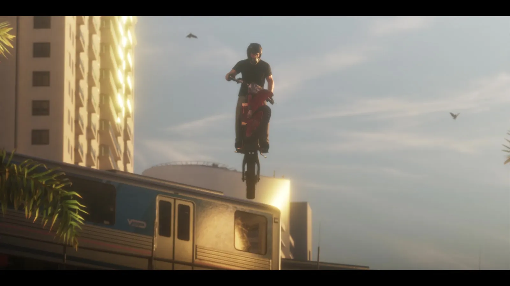
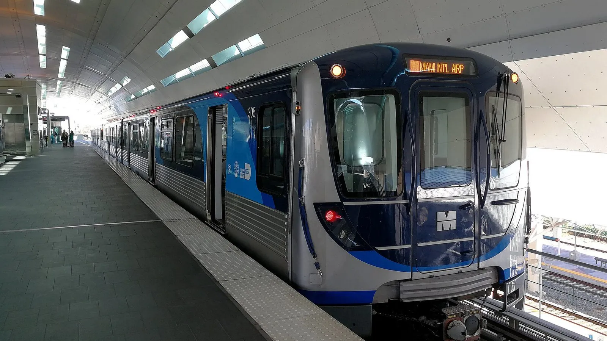
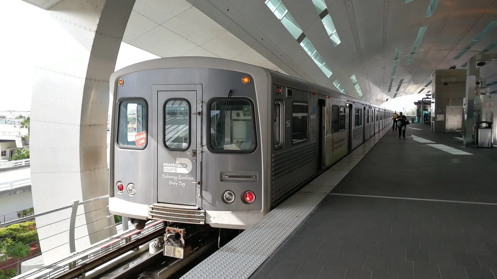

Надземный поезд Вайс-Сити и Metrorail Майами
Опубликовано:
Поезд на эстакаде среди пальм и высоток — знакомая картинка Майами, где по эстакадам ходит Metrorail. Но Rockstar поезд не называла: это наша трактовка, а сам вагон и линия в игре свои.


- В третьем трейлере GTA 6 мотоциклист на закате перелетает над серебристым вагоном надземного поезда.
- В Майами похожий транспорт есть: Metrorail — надземное метро, поезда идут по эстакадам над улицами.
- Metrorail открыли 20 мая 1984 года: тогда было 10 станций, к 2014 году — 23.
- С 2018 года старые вагоны меняют на новые поезда Hitachi.
- Rockstar прототип не подтверждала.
Что в игре
Третий трейлер GTA 6 вышел 15 октября 2026 года. На 49-й секунде — короткий трюк: мотоциклист в шлеме взлетает над серебристым вагоном поезда, который идёт по эстакаде. Вокруг — пальмы, высотка и закатное небо Вайс-Сити.
Сам прыжок длится около секунды, но в кадре хорошо видно главное: в городе Леониды есть поезд, поднятый над улицами.
Что в реальности
В Майами такой поезд — Metrorail, надземное метро округа Майами-Дейд. Поезда идут по бетонным эстакадам над улицами и дворами, поэтому вагон на фоне пальм и высоток — обычный вид для города.
Metrorail открыли 20 мая 1984 года. На старте было 10 станций и 11 миль (около 18 км) двухпутной линии, в первые дни — около 6 000 поездок в сутки. К 30-летию, в 2014 году, сеть выросла до 25 миль (около 40 км) и 23 станций, а в среднем — до ~77 000 поездок в сутки. С июля 2012 года Оранжевая линия довозит пассажиров до станции Международного аэропорта Майами.

В январе 2018 года на линию вышел первый новый поезд — первые четыре вагона из 136, которые заменят парк Metrorail. Вагоны сделала Hitachi Rail Italy, а оплатили закупку (~313,8 млн долларов) из специального транспортного налога округа.
Совпадает и отличается
| Майами | GTA 6 | |
|---|---|---|
| Поезд на эстакаде над городом | Metrorail, с 1984 года | 🟢 Да |
| Вокруг пальмы и высотки | Да | 🟢 Да |
| Название линии и вагонов | Metrorail, вагоны Hitachi | 🔵 В трейлере не показано |
| Трюк с прыжком над поездом | — | 🔵 Сцена игры |
Источники: Rockstar Games — третий трейлер GTA 6 (15 октября 2026); Mass Transit — «Miami-Dade Transit Celebrates 30 Years of Metrorail» (19 мая 2014); Mass Transit — «New Miami-Dade Metrorail Train in Service» (2 января 2018); Wikimedia Commons — фото Alancrh (CC BY-SA 4.0).
Реальные фото: Фото: Alancrh, CC BY-SA 4.0 · Wikimedia Commons; Фото: Alancrh, CC BY-SA 4.0 · Wikimedia Commons. Кадры игры: Rockstar Games.
Каждый день — одно сравнение: кадр игры рядом с реальным фото. Подписывайтесь:
YouTubeInstagramTikTok
 vs
vs
 vs
vs